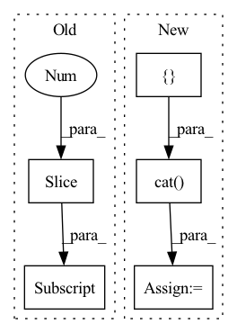

Pattern ID :110
Before Change
x = self.band_split(input)
for idx, key in enumerate(self.bands[:-1] ):
_x = self.net[key](x[idx])
stacked.append(_x)
After Change
// TODO: scale
x = self.nonlinear2d(x)
output = torch.cat([ x, x_invalid, dim=2)
return output
In pattern: SUPERPATTERN
Frequency: 4
Non-data size: 5
Instances Fragment ID: 464135
Project Name: tky823/dnn-based_source_separation
Commit Name: 8fb5cd5f4f8b4a435d058aef6204904f657abea0
Time: 2021-06-06
Author: 40362510+tky823@users.noreply.github.com
File Name: src/models/d3net.py
M Class Name: D3Net
N Class Name: D3Net
M Method Name: forward(2)
N Method Name: forward(2)
M Parent Class: nn.Module
N Parent Class: nn.Module
M File Name: src/models/d3net.py
N File Name: src/models/d3net.py
M Start Line: 70
M End Line: 85
N Start Line: 73
N End Line: 97
Before Change
x = self.net[idx](x)
stacked.append(x)
output = torch.cat(stacked[1:] , dim=1)
return output
After Change
key = self.bands[-1] // "full"
x = self.net[key](input)
x = torch.cat([ stacked, x, dim=1)
x = self.d2block(x)
output = self.gated_conv2d(x)
return output Fragment ID: 464133
Project Name: tky823/dnn-based_source_separation
Commit Name: 628cce12054e3d56f6fd72af21cdb87a520f32ae
Time: 2021-03-12
Author: 40362510+tky823@users.noreply.github.com
File Name: src/models/d3net.py
M Class Name: D3Net
N Class Name: D3Net
M Method Name: forward(2)
N Method Name: forward(2)
M Parent Class: nn.Module
N Parent Class: nn.Module
M File Name: src/models/d3net.py
N File Name: src/models/d3net.py
M Start Line: 59
M End Line: 70
N Start Line: 45
N End Line: 59
Before Change
if self.training and self.layer_dropout > 0:
to_drop = torch.empty(len(self.blocks)).uniform_(0, 1) < self.layer_dropout
blocks = [block for block, drop in zip(self.blocks, to_drop) if not drop]
blocks = self.blocks[:1] if len(blocks) == 0 else blocks
block_args = list(map(lambda x: {"f_args": x[0], "g_args": x[1]}, block_args))
return _ReversibleFunction.apply(x, blocks, block_args)After Change
self.blocks = nn.ModuleList([ReversibleBlock(f=f, g=g) for f, g in blocks])
def forward(self, x, **kwargs):
x = torch.cat([ x, x, dim=-1)
blocks = self.blocks
args = route_args(self.args_route, kwargs, len(blocks))
args = list(map(lambda x: {"f_args": x[0], "g_args": x[1]}, args))
layers_and_args = list(zip(blocks, args))
if self.training and self.layer_dropout > 0:
layers_and_args = layer_drop(layers_and_args, self.layer_dropout)
blocks, args = map(lambda ind: list(map(itemgetter(ind), layers_and_args)), (0, 1))
out = _ReversibleFunction.apply(x, blocks, args)
return torch.stack(out.chunk(2, dim=-1)).sum(dim=0)
Fragment ID: 464130
Project Name: lucidrains/sinkhorn-transformer
Commit Name: d5b9c649e59290b15c15f85d0bb182cb20b699fb
Time: 2020-04-15
Author: lucidrains@gmail.com
File Name: sinkhorn_transformer/reversible.py
M Class Name: ReversibleSequence
N Class Name: ReversibleSequence
M Method Name: forward(2)
N Method Name: forward(2)
M Parent Class: nn.Module
N Parent Class: nn.Module
M File Name: sinkhorn_transformer/reversible.py
N File Name: sinkhorn_transformer/reversible.py
M Start Line: 133
M End Line: 142
N Start Line: 161
N End Line: 174
Before Change
sim = einsum("b h i d, b h j d -> b h i j", q, k)
i, j = sim.shape[-2:]
mask_value = -torch.finfo(sim.dtype).max
if exists(context_mask):After Change
// process in chunks of heads
out = []
max_heads = self.max_heads_process
for q_chunk, k_chunk, v_chunk in zip(q.split(max_heads, dim = 1), k.split(max_heads, dim = 1), v.split(max_heads, dim = 1)):
sim = einsum("b h i d, b h j d -> b h i j", q_chunk, k_chunk)
if exists(context_mask):
sim = sim.masked_fill(~context_mask, mask_value)
sim = sim.masked_fill(causal_mask, mask_value)
attn = sim.softmax(dim = -1)
attn = self.dropout(attn)
out_chunk = einsum("b h i j, b h j d -> b h i d", attn, v_chunk)
out.append(out_chunk)
// concat all the heads together
out = torch.cat( out, dim = 1)
// merge heads and then combine with linear
out = rearrange(out, "b h n d -> b n (h d)") Fragment ID: 464136
Project Name: lucidrains/perceiver-ar-pytorch
Commit Name: be3765300f5aae03b779edf0e256b7a74bda5fc8
Time: 2022-06-21
Author: lucidrains@gmail.com
File Name: perceiver_ar_pytorch/perceiver_ar_pytorch.py
M Class Name: CausalPrefixAttention
N Class Name: CausalPrefixAttention
M Method Name: forward(5)
N Method Name: forward(5)
M Parent Class: nn.Module
N Parent Class: nn.Module
M File Name: perceiver_ar_pytorch/perceiver_ar_pytorch.py
N File Name: perceiver_ar_pytorch/perceiver_ar_pytorch.py
M Start Line: 130
M End Line: 159
N Start Line: 133
N End Line: 178